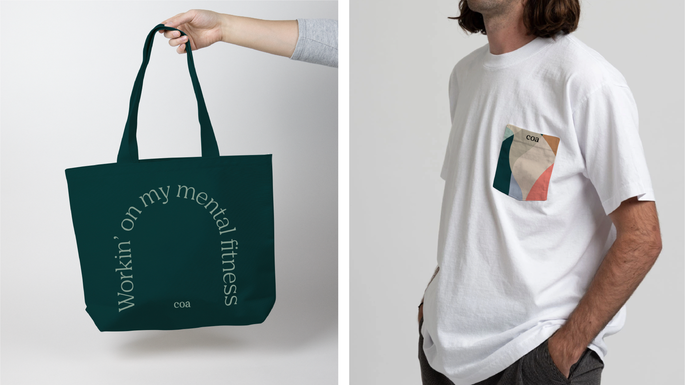
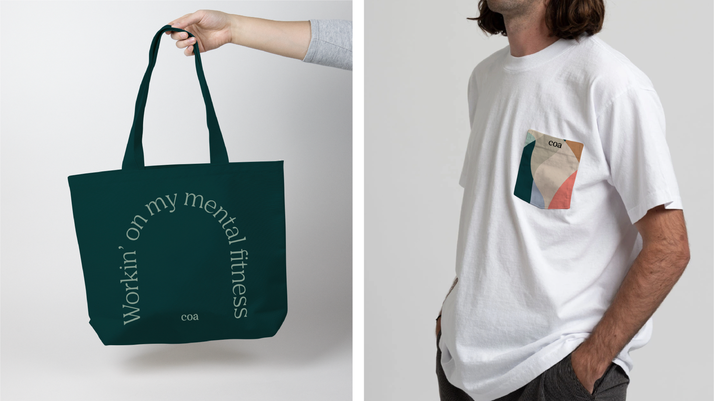
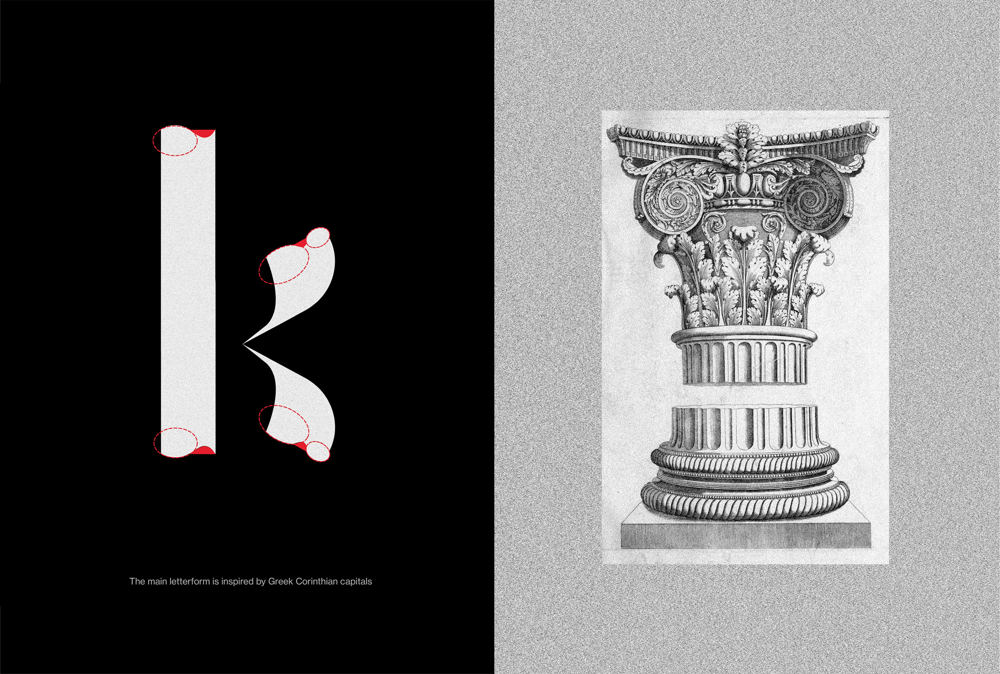
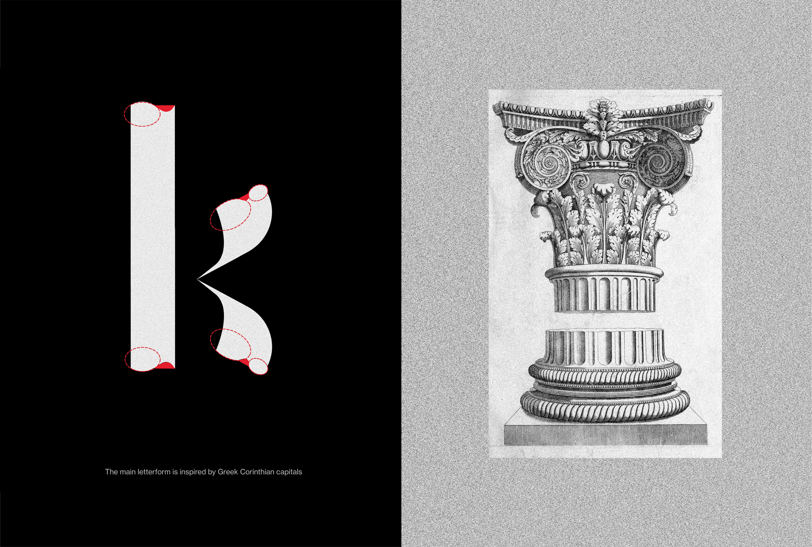
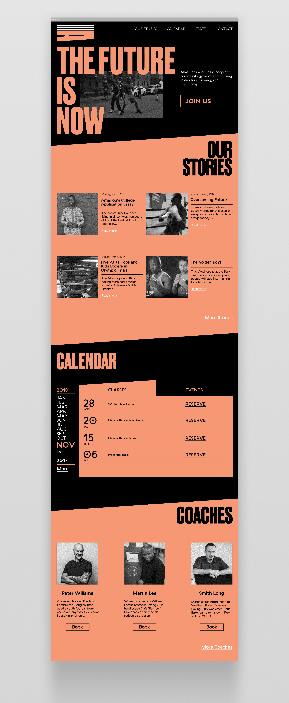
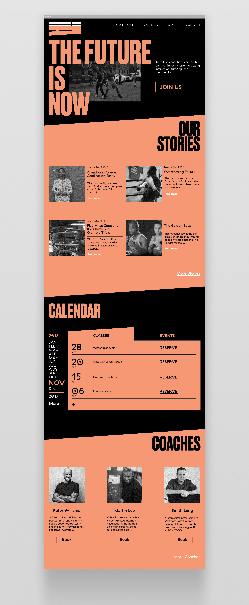
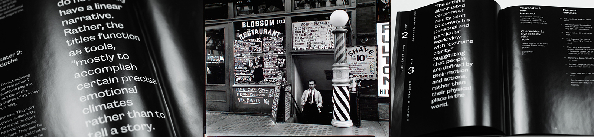
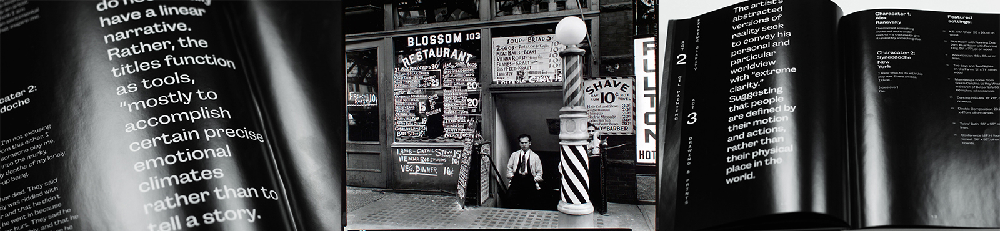

San Francisco based conceptual graphic designer.
Primarily working in brand identity, art direction, print,
and editorial design.
LEGACY
SPERM STORAGE / TESTING
Fatherhood starts with you. Whoever you are, wherever you are. Feritlity is personal. So understanding, improving, and protecting yours begins where you feel comfortable - at home. The night sky. The one thing that hasn’t changed since your dad became a father. For generations, we have looked to the same constellations for direction when charting our own paths through life. Legacy is a new guiding light in the dark—the North Star on your journey towards fatherhood.
COA - Mental Fitness Community
Health Care
Come as you are and stay as long as you’d like. Individual journey,communal pursuit. Coa exists to create a home for proactive self-curiosity. A home for one-on-one therapy, community mental fitness classes, or simply unwinding with a cup of tea.Coa is a fresh start for your mental health. A creative outlet for your inner curiosity. A safe haven for your feelings.


 



TAP AIR PORTUGAL
AIRLINE
Portugal - Explorer of the World
TAP Air Portugal is the flag carrier airline of Portugal, headquartered at Lisbon airport. This project is a rebranding of the Portuguese national airline TAP. The logo of TAP Air Portugal is inspired by a compass needle which represents Portugal’s heritage as leaders in the age of exploration.


TYPFACE - CALLAS
TYPOGRAPHY
Greek-American Opera Singer Maria Callas
Callas is a typeface inspired by the great Greek-American opera singer Maria Callas. Maria Callas is a legend of opera and an iconic figure of the classic style of a by-gone era


 



ATLAS COPS AND KIDS
NON - PROFIT BOXING GYM
Atlas Cops and Kids is a nonprofit boxing gym running three free community gyms in Brooklyn and Staten Island. The organization offers boxing tutoring, and mentorship to create champions in and out of the ring.


 


TV MAGAZINE
A SKETCH COMEDY IN BOOK FORM
This magazine is a reinterpretation of the British sketch comedy television series ‘That Micheal and Webb look’ which parodies nostalgic pop culture. The magazine mimics the style and the aesthetics of the tv show, and reproduces the spirit of the show in magazine form.
The book follows a traditional magazine structure (front of book, features and back of book). The content of the magazine includes a synopsis of the tv show, scripts from some of the best sketches, interviews with the creators and advertisements. The advertisement pages are for fake products inspired by some of the recurring sketches in the show.


ALEX KANEVSKY'S SYNECDOCHE NEW YORK
EXHIBITION PUBLICATION
The exhibition Alex Kanevsky’s Synecdoche New York is formatted as a stage play which is an association to the movie Synecdoche New York. Both the artist Alex Kanevsky and the film will be celebrated and connected through out three acts. Where each act introduces and exhibits a different aspect of Kanevsky’s paintings.
 
